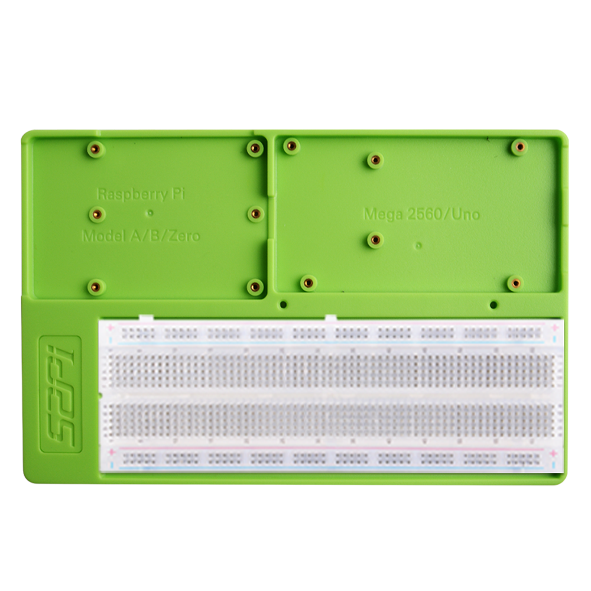

52Pi Experiment Trays
The 52Pi Experiment Trays are versatile experimental platforms designed for ease in electronic prototyping.
Key features:
-
Material: Made from durable ABS plastic.
-
Compatibility:
- Raspberry Pi: Suitable for Model A, B, and Zero.
- Arduino: Compatible with UNO series and Mega 2560.
- Mounting: Equipped with screw holes for secure attachment of the boards.
- Utility: Ideal for facilitating electronic experiments and projects.
